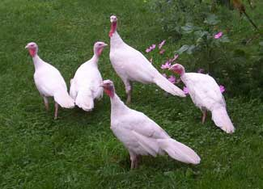

Plan ahead! If you order some poults (baby turkeys) now, or place an order for next season, you can raise your own flavorful Thanksgiving dinner. A recent taste test involving about 70 people and nine breeds of turkeys showed that heritage breeds taste better. The overall winner was the midget white turkey, and the runner up was the bourbon red. (The industrial Butterball came in last.)
For details of the taste test, read How Eight Heritage Turkeys Kicked a Butterball’s Butt.
The midget white turkey has a remarkable history. It was rescued when there were only six birds left. Read more about A History of the Midget White Turkey and Why the Midget White Turkey is the Perfect Homestead Turkey from the man who helped develop the breed.
To view photos of several breeds of heritage turkeys, click here.
You can learn more about other rare and endangered breeds of poultry on these Web sites:
Society for the Preservation of Poultry Antiquities
The American Livestock Breeds Conservancy
These farms and hatcheries may have rare midget white poults (chicks) available for sale by mail order:
Stromberg’s Chicks & Gamebirds Unlimited
X-treme Game Birds and Poultry
To order a heritage breed turkey for Thanksgiving, search for suppliers near you at EatWild and LocalHarvest.|
 HILARY CHESTER/ALWAYS SOMETHIN' FARM Midget white turkeys may be the best breed for a small homestead. |
|
|